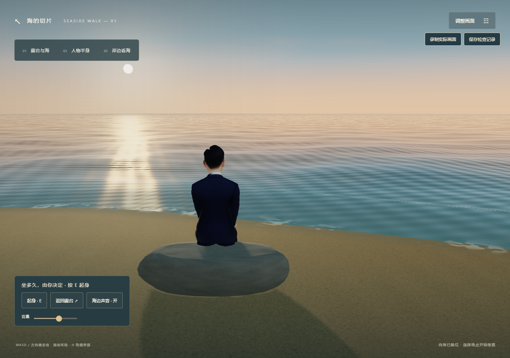

4.3资源副本
当前bundle、样式、0597手部版GLB、语音时间表、海浪/风/派生纹理、许可与对应网页源码。固定目录不覆盖。
文件、体积与逐项校验值 ↗运行与重建说明 ↗GLASSHOUSE · BASELINE 4.3
固定于 2026.11.15 0597人物 · 网页实时演示
最初的目标是在海边展示海上风景。玻璃屋和人物提供观景的位置、尺度与体验。这份档案保留实现依据，后续制作优先让同一片海更自然、更值得停留。
固定版独立保存运行代码、当前人物与声音资源。
后续修改开发入口，仍可回来对照这一版。

A VERSION YOU CAN RETURN TO
固定版是可单独运行的资源副本，场景内动画与交互照常运行。每个文件记录SHA-256，校验命令只读检查，不覆盖固定目录。文档与制作实录留在主项目，可继续补充。
npm run verify:baseline01 / WHAT WORKS
“可复用”表示有明确的实现和入口。
接入新资产后，仍要按目标画面重新验证。
02 / ANOTHER CHARACTER
先保留来源和身份，再看站走、接触与表演。
当前加载器有骨架和动作约定，并非任意GLB即插即用。
GLB保存当前网格、骨骼、5段身体动作和面部形态；坐姿、台阶、镜头、语音驱动和环境声音由网页完成。只复制GLB，无法复现整段体验。
03 / ANOTHER PLACE
先确定体验与构图，再调整几何、交互、光和声音。
可见物体、碰撞与支撑面需要一起改变。
EXTENSION IDEA / 001
扩展构想 · 尚未实现
记录于2026.11.15 · 保留4.3固定版
本节记录新的场景扩展思路与目标画面，未接入三维演示。
04 / WHAT TO TAKE
运行资源已留在固定版。
可编辑工程与历史原件在主项目中按原路径保留。
当前bundle、样式、0597手部版GLB、语音时间表、海浪/风/派生纹理、许可与对应网页源码。固定目录不覆盖。
文件、体积与逐项校验值 ↗运行与重建说明 ↗当前人物约27.2MB。自己的头部和主体保留，局部手面有独立来源；原四人文件与旧版继续留存。
下载固定版人物GLB ↓可编辑Blender工程 ↓人物制作与来源记录 ↗上方每项能力和步骤都链接到对应源码。接入时先复制独立人物/场景分支，调整接口和数据，再完成验证。
查看网页说明数据 ↗查看固定版场景源码 ↗继续从目标画面、太阳与海况、角度、自然现象和艺术处理记录中取用。实拍研究素材与可运行素材分开保留。
返回效果整理网页 ↗实拍与条件记录 ↗05 / THE BOUNDARIES
达到当前演示的用途，
后续扩展按真实需求逐项增加。
06 / EVIDENCE
以下为4.3实际canvas与同一WebAudio混音。
24fps是视频编码参数，不代表设备渲染性能。
4.3已有检查：32项单位测试、三处沙发与扶手椅操作、桌面/390像素布局、台阶90个样本、声画相位/暂停/静音与音量。数值记录支持检查，最终自然度仍以观看为准。
沙发与手机操作 ↗台阶与控制 ↗浪声联动 ↗完整验证记录 ↗历史画面与制作实录 ↗
这些是4.3已有实测记录；本次固定与文档整理另外检查资源完整性、固定版实际运行、链接与页面布局。浏览器自动检查使用隔离临时Chrome，不冒称内置浏览器自动操作验证。